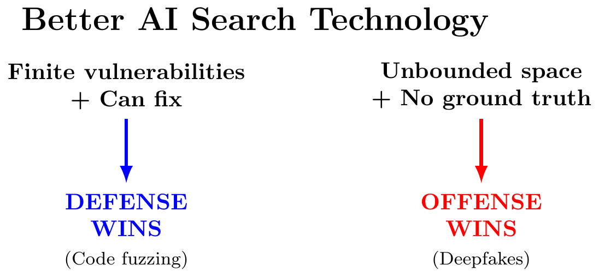
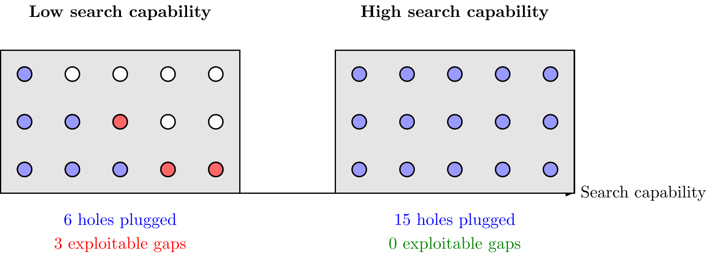
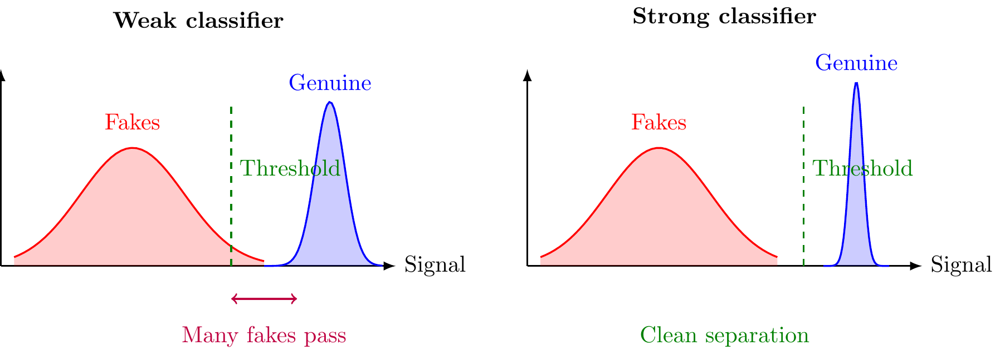
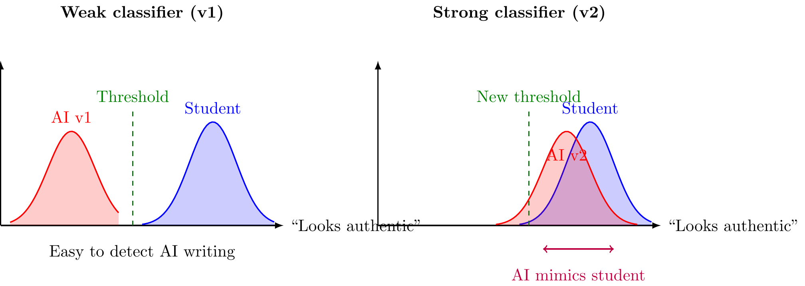
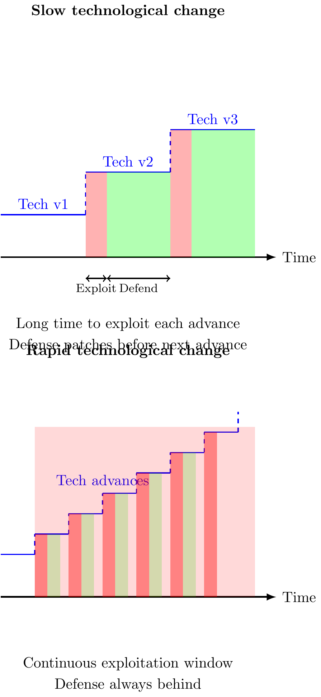

When a new technology emerges—better AI, faster networks, improved sensors—who benefits more: attackers or defenders?
The answer depends not on the technology itself, but on the structure of the conflict. A tool that helps defense in one setting can help offense in another.
I identify four mechanisms that determine which side benefits. Each has distinct logic and clear predictions.
A Decision Framework
To determine which side benefits from technology, ask three questions:
The logic:
- Finite search space.
- When vulnerabilities are limited, better search eventually exhausts them—favoring defense.
- Fix vs. monitor.
- If defense can permanently fix holes, they accumulate protection. If they can only monitor known holes (with limited attention), the attack surface grows faster than defense capacity.
- Ground truth vs. appearance.
- If defense can verify against reality (e.g., check a document’s actual history), better classifiers help defense. If defense only sees appearances (e.g., does this essay “look” authentic?), better classifiers reveal how to optimize forgeries.
Four Core Mechanisms
Mechanism 1: Finite Search Space (Defense Favored)
When both sides search for vulnerabilities in a finite space, improved search technology favors defense.
- The intuition.
- Imagine a wall with 100 holes. Attacker and defender both search—one to exploit, one to plug. With weak search, attacker finds 20 holes, defender finds 15, leaving 5 gaps. As search improves, both find more. Eventually all 100 are discovered and plugged. The attacker’s advantage vanishes.

- Example: Code vulnerability discovery.
- Fuzzing tools help both sides find bugs. But codebases have finitely many bugs. As fuzzing improves, defenders find and fix them faster than new ones emerge. Google’s OSS-Fuzz has found and fixed 10,000+ vulnerabilities. The backlog shrinks.
Key feature: Saturation. The search space is bounded.
Mechanism 2: Attention Constraints (Offense Favored)
When defense cannot fix vulnerabilities but must monitor them with limited attention, improved search favors offense.
- The intuition.
- Imagine a city with many entry points. Defense has limited guards. As search reveals more entry points, defense spreads thinner. The attacker needs only ONE unwatched entry to succeed.

- Example: Network intrusion detection.
- As networks grow, security teams discover more attack vectors. But personnel are limited—they can’t monitor every endpoint. The attack surface expands faster than monitoring capacity.
Key feature: Unbounded monitoring burden. Things-to-watch grows faster than watching capacity.
Mechanism 3: Verification with Ground Truth (Defense Favored)
When defense can verify items against ground truth, improved classification favors defense.
- The intuition.
- You’re testing whether a diamond is real. Your device gives a signal: real diamonds give 10, fakes give 0-8. As the device improves, signal separation increases. With perfect testing, no fake passes.

- Example: Document authentication.
- Banks verify checks against actual account records. Better fraud detection (signature verification, watermark detection) helps defense more, because the bank can verify against ground truth.
Key feature: Ground truth access. Defense can check against an objective standard offense cannot replicate.
Mechanism 4: Examination without Ground Truth (Offense Favored)
When defense only observes appearances without ground truth, improved classification can favor offense.
- The intuition.
- You’re detecting whether a student wrote their own essay. Your classifier flags “AI-like” patterns. But you can’t verify ground truth—whether AI was actually used. As the classifier improves, it reveals which patterns to avoid. AI tools optimize to evade detection. The classifier becomes a training signal for the attacker.

- Example: AI essay detection.
- Detectors flag “AI-like” patterns but can’t verify whether AI was used. As detectors improve, they reveal what to avoid. AI tools train on these signals, optimizing evasion. Structurally favors offense.
- Example: Deepfakes.
- Video authentication looks for artifacts. But it’s checking appearance, not ground truth. Better detection reveals exactly what artifacts to eliminate. Each detector generation trains the next generator generation.
Key feature: No ground truth. Defense’s classifier reveals how to optimize forgeries.
The Role of Technology Speed
Even when technology structurally favors one side, the speed of technological change matters enormously.

- The logic.
- Patching takes time. Each offensive capability opens an exploitation window before defense adapts. Slow technological change: defense catches up. Rapid change: offense maintains persistent advantage—each new capability arrives before the previous one is defended.
- Why AI is concerning.
- AI capabilities advance rapidly—new models every few months, new exploits continuously. Even in structurally defensive domains (vulnerability finding), rapid pace means practical offensive advantage.
- Example: Zero-day vulnerabilities.
- Gradual fuzzing improvement: security teams patch at a steady pace. Rapid AI-enabled discovery: patching can’t keep up. Theoretical defensive advantage (finite vulnerabilities) overwhelmed by practical offensive advantage (rapid advancement).
Phase Diagram: Effort and Equilibrium
How does improved technology shift equilibrium behavior?
In the “finding holes” scenario, let \(e_A\) and \(e_D\) be attacker and defender effort. Attacker wins with probability: \[P(\text{win}) = F(e_A) - F(e_D)\] where \(F\) is the cumulative probability of finding vulnerabilities.

- Key insight.
- In finite search space, as search improves: - Both sides exert less effort (search is cheaper) - Defense success rate increases dramatically - The marginal vulnerability becomes harder to find; defense finds it first
Structure matters more than raw capability—equilibrium dynamics determine outcomes.
Application: Classifying Real-World Cases
Apply the framework to real cases:
Code Vulnerability Discovery
- Finite search space? Yes—codebases have finitely many bugs
- Can fix? Yes—patches are permanent
- Prediction: Defense favored (Mechanism 1)
- Reality: OSS-Fuzz found 10,000+ bugs, now fixed. Vulnerability backlog declining. ✓
Spear Phishing Emails
- Finite space? No—unbounded forgery space
- Ground truth? No—only appearance (“looks legitimate?”)
- Prediction: Offense favored (Mechanism 4)
- Reality: AI generates personalized phishing at scale. Filters flag patterns; attackers adapt. Offense leads. ✓
AI Essay Detection
- Finite space? No—unbounded essay variations
- Ground truth? No—only appearance (“looks AI-written?”)
- Prediction: Offense favored (Mechanism 4)
- Reality: GPTZero, Turnitin reveal what patterns to avoid. AI tools evade. Detection accuracy declining. ✓
Content Moderation
- Finite space? Effectively yes—finitely many policy evasions
- Can fix? Yes—patterns added to filters permanently
- Prediction: Defense favored (Mechanism 1)
- Reality: Platforms continuously improve. Detection rates rising for policy violations. ✓
Deepfakes
- Finite space? No—unbounded synthetic media
- Ground truth? Partial—provenance systems exist (C2PA) but most verification is appearance-based
- Prediction: Currently offense (Mechanism 4), but provenance could shift to defense
- Reality: Deepfake quality improving faster than detection. Each detector trains better generators. Provenance systems (content credentials) could create ground truth and flip this. ✓
Summary
Technology doesn’t uniformly help offense or defense—structure determines outcomes.
| Mechanism | Key Feature | Favors | Examples |
|---|---|---|---|
| Finite search & fixing | Exhaustible holes | Defense | Code fuzzing |
| Finite search & monitoring | Limited attention | Offense | Network intrusion |
| Verification (ground truth) | External validation | Defense | Document authentication |
| Examination (appearance) | No ground truth | Offense | Essay detection, deepfakes |
Speed matters: Rapid technological change creates offensive advantage—each capability arrives before the previous one is defended.
Implications: - Defensive domains → Accelerate discovery and patching - Offensive domains → Invest in provenance systems (create ground truth) - All domains → Consider slowing capability advancement to allow defense time
The offense-defense balance is not fixed—it’s a design choice.
References
- Garfinkel & Skaperdas (2007) “Economics of Conflict: An Overview”
- Contest models and conflict economics. Returns to scale affect equilibrium efforts.
- Garfinkel & Dafoe (2019) “How does the offense-defense balance scale?”
- Investment growth tends to favor defense at high levels.
- Glaser & Kaufmann (1998) “What Is the Offense-Defense Balance and How Can We Measure It?”
- Defines balance as ratio of attacker forces needed to defender forces deployed.
- Schneier (2018) “Artificial Intelligence and the Attack/Defense Balance”
- AI favors defense by shoring up human weaknesses that attacks exploit.
- Adkins (2024) “The Offense-Defense Balance”
- Vulnerability discovery accelerating with LLMs. Key: who runs faster at finding and fixing?
- Bressler, Trager, Dafoe (2021) “The Offense-Defense Balance and the Costs of Anarchy”
- Welfare can be better under high offensive advantage than intermediate (reduced conflict intensity).